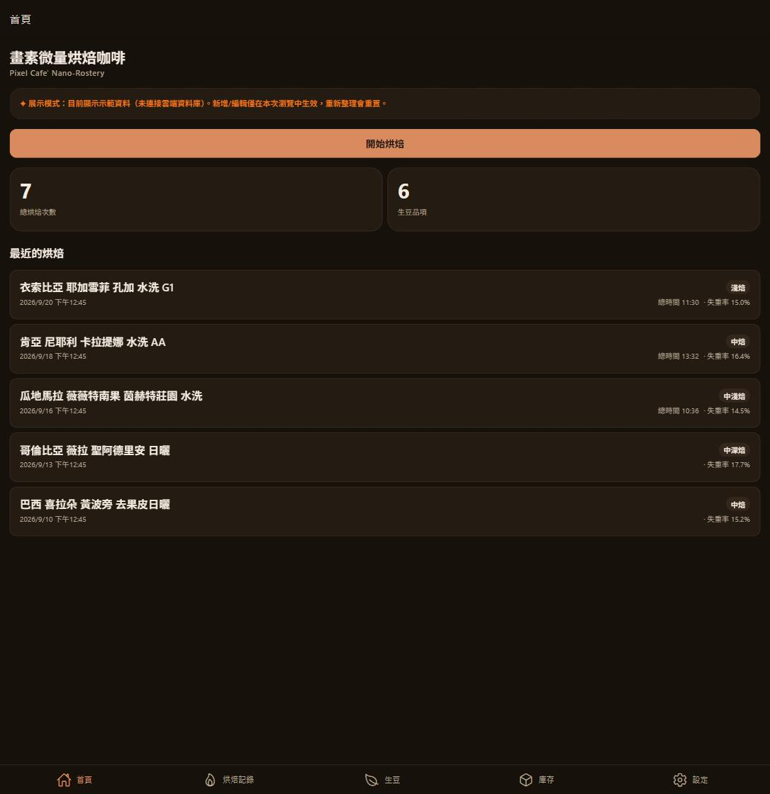
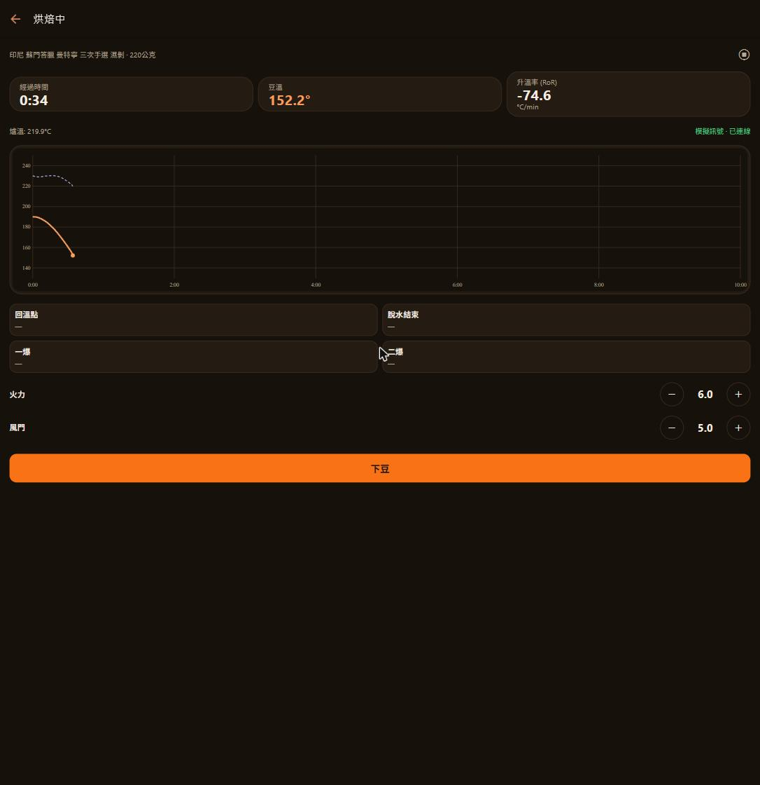
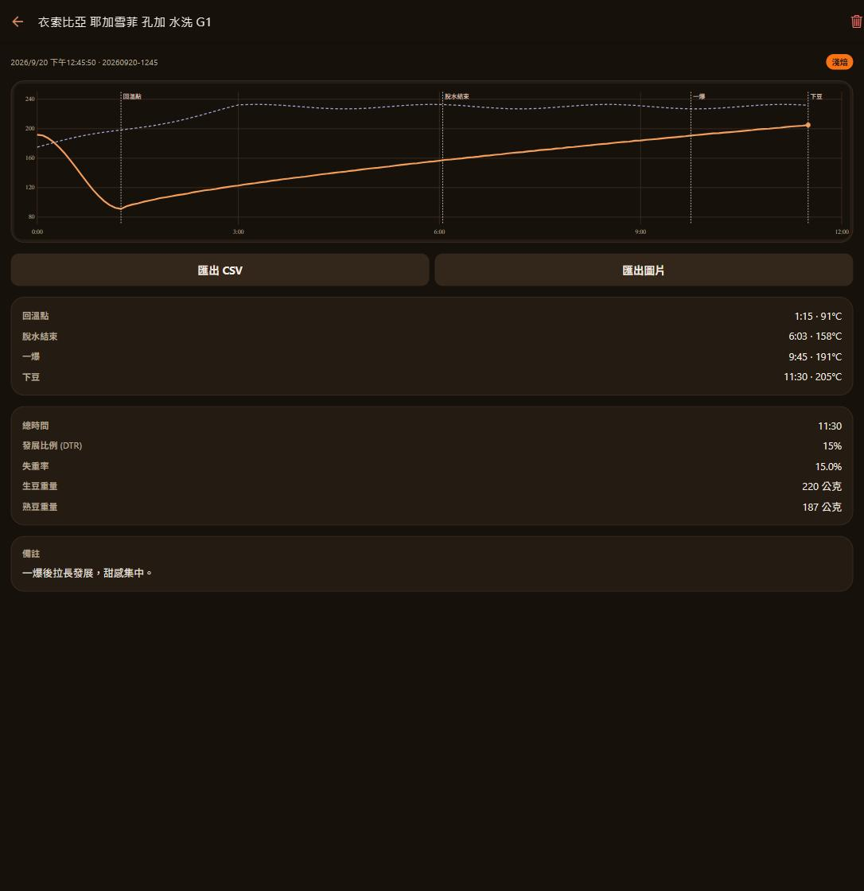
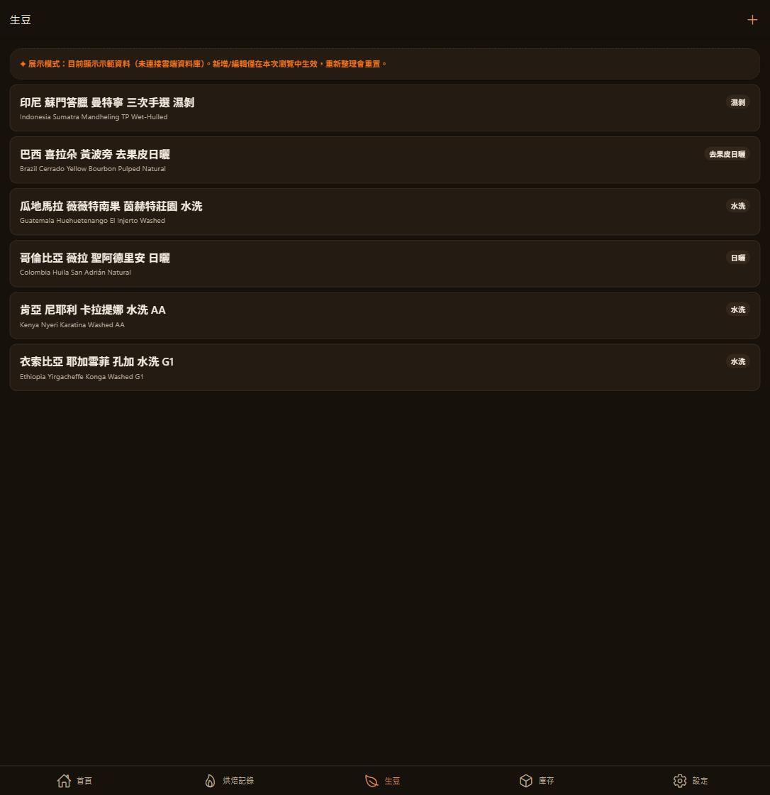
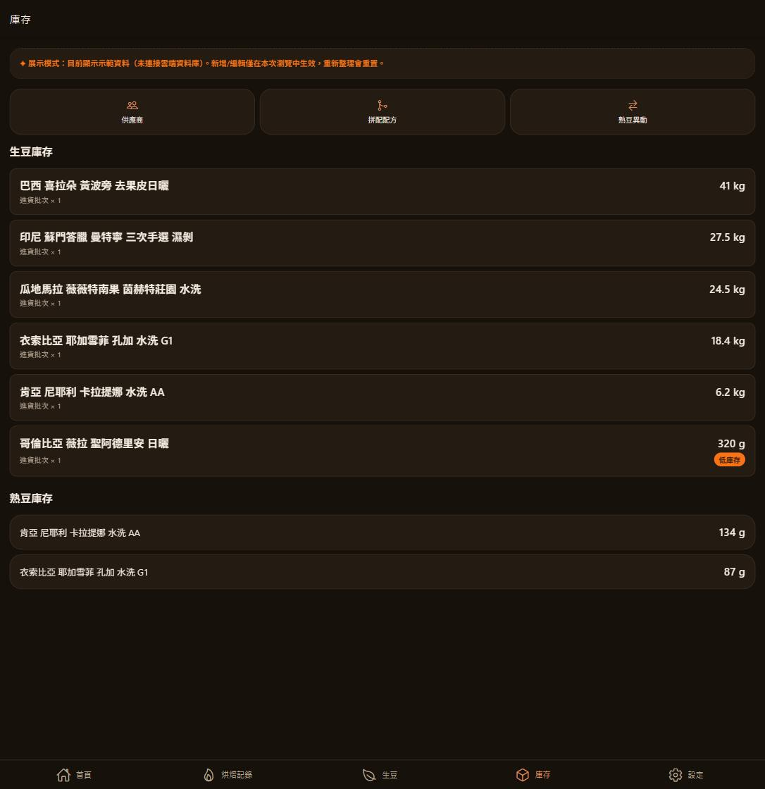
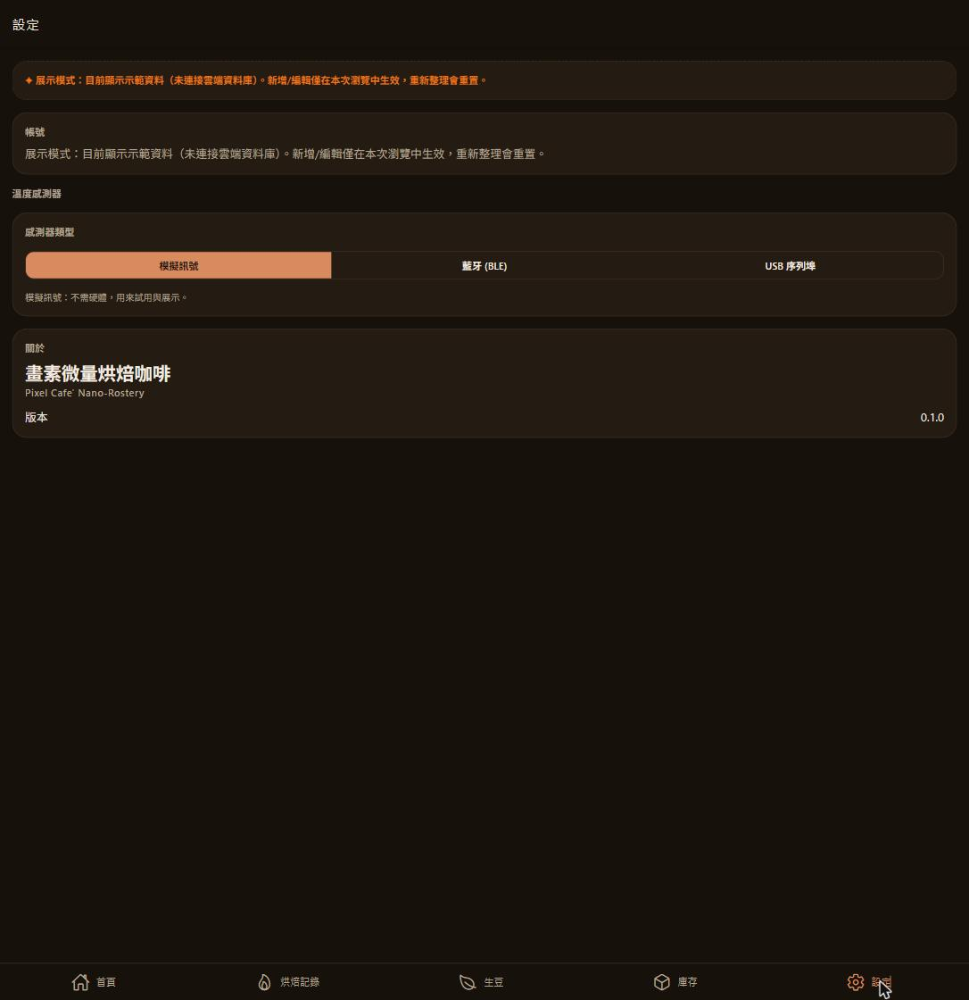

Pixel Cafe' Nano-Roastery — 跨平台咖啡烘焙記錄 App
一支從 Windows FoxPro 老軟體 cafe4 重生的烘焙記錄工具：即時溫度曲線、事件標記、生豆與熟豆庫存，資料雲端同步到手機、平板與桌機。
舊版 cafe4 是一支跑在 Windows 上的 FoxPro 程式，多年來記錄著每一次烘豆的温度、時間與風味筆記——但它只能裝在一台電腦上，資料出不了那台機器。「畫素微量烘焙咖啡」把同一套烘焙記錄邏輯搬進手機與雲端：溫度曲線即時畫、生豆庫存自動扣、記錄在 iOS、Android、Windows 之間同步，烘豆的人不用再守著一台電腦。
產品沿用舊軟體的名字，作為對它的致敬，也標誌著這是同一件事的第三十年版本，不是全新發明。
核心畫面圍繞著烘豆本身真正發生的五個時刻：豆子入鍋回溫、脫水結束、一爆、二爆、下豆。這條時間軸不是介面裝飾，是烘豆師實際判斷風味走向的依據。
打開 App 先看到總烘焙次數、生豆品項數，以及最近幾筆記錄的烘焙度、總時間與失重率——判斷「這批豆子表現如何」的三個最快指標。

開始一鍋烘焙後，畫面同時追蹤經過時間、即時豆溫與升溫率（RoR），並把爐溫疊在同一張圖上。火力與風門用加減鈕現場調整，四個關鍵事件點用一個按鈕標記，事後回放時間軸上就會出現對應標記線。

下豆之後，這鍋烘焙變成一筆完整記錄：溫度曲線疊上回溫點／脫水結束／一爆／下豆的標記線，發展比例（DTR）、失重率、生豆與熟豆重量自動算好，還能匯出 CSV 或圖片留存、比較。

烘焙記錄之外，是完整的生豆與熟豆庫存：從供應商進貨、烘焙時自動扣生豆庫存、熟豆出入庫，到拼配配方管理，對應舊版 cafe4 原本就有的批次管理需求。
每支生豆記錄產區、莊園、處理法（水洗、日曬、去果皮日曬、濕剝⋯）與等級，中英對照顯示，方便對照供應商標示與國際評鑑資料。

生豆庫存依進貨批次計算剩餘公斤數，低於門檻會標示「低庫存」；熟豆庫存則依烘焙產出的公克數累計。供應商、拼配配方、熟豆異動記錄也都在這一頁。

這是整支 App 目前最重要的架構決定：所有溫度資料都經過同一個 Sensor 介面，實作可以隨時替換，UI 完全不用改。
先讓軟體能用，再讓硬體接進來——而不是被一顆還沒買的溫度探針卡住開發進度。
目前預設是 MockSensor：模擬訊號，任何環境都能跑，也是線上 POC 用來展示整個 UI 的方式。等實體探針就緒，設定頁可以切到 WebSerialSensor（桌機 Chrome/Edge 透過 USB 轉接器）或 BleSensor（藍牙，需要 Expo dev build），不需要更換任何畫面邏輯。

前端是 Expo（React Native）+ TypeScript，用同一套程式碼發 iOS、Android 與 Web／PWA；後端是 Supabase，每張表都有列級權限（RLS），資料只有登入的使用者自己看得到、改得到。
| 層次 | 選擇 |
|---|---|
| 框架 | Expo (React Native) · TypeScript · expo-router（型別化路由） |
| 後端 | Supabase — Postgres + Auth + Row Level Security |
| 資料層 | @tanstack/react-query（雲端資料）· zustand（單場烘焙的即時狀態） |
| 登入 | Email／密碼，另支援 Google OAuth（走 Supabase Google provider） |
| 備份 | 登入時取得的 Google token 直接呼叫 Drive REST API，把每筆烘焙存成 JSON 備份到使用者自己的 Google Drive |
| 部署 | Web 版靜態輸出，推上 main 由 GitHub Actions 自動部署到 GitHub Pages |
| 語言 | 介面文字全部 zh-TW，對應舊版 cafe4 與其使用者的語言 |
登入、生豆型錄、即時烘焙（模擬訊號）、溫度曲線、雲端同步。
供應商、生豆進貨批次、烘焙自動扣庫存、熟豆出入庫、拼配配方。
模擬／Web Serial／BLE 三種實作、設定頁選擇與配對、雙曲線比較、CSV／PNG 匯出。
Google 一鍵登入，烘焙儲存時自動備份 JSON 到使用者自己的 Google Drive。
目前線上 POC 仍在展示模式（瀏覽器記憶體示範資料），正在接上真正的雲端資料庫。
Expo Go 無法載入原生藍牙模組，需要 expo run:android 或 EAS 打包出 dev client 才能真正連上實體探針。